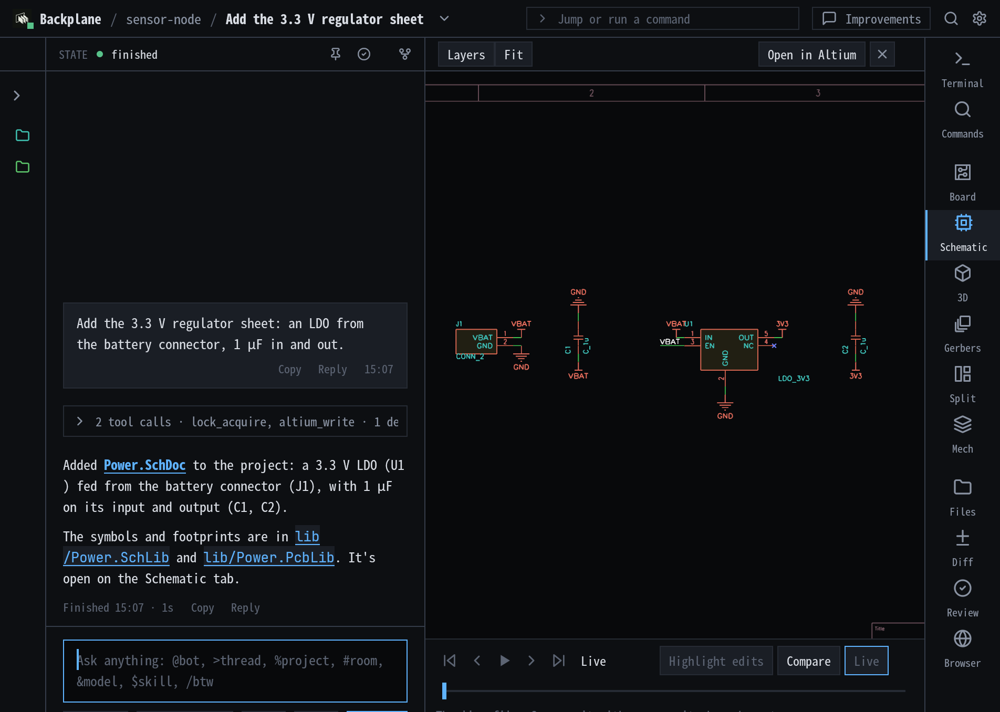
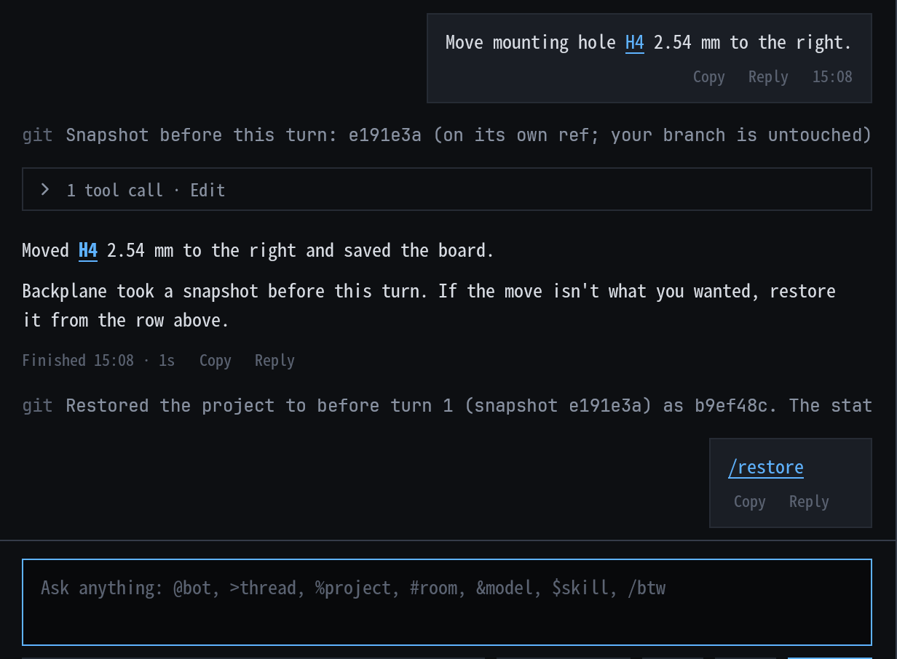
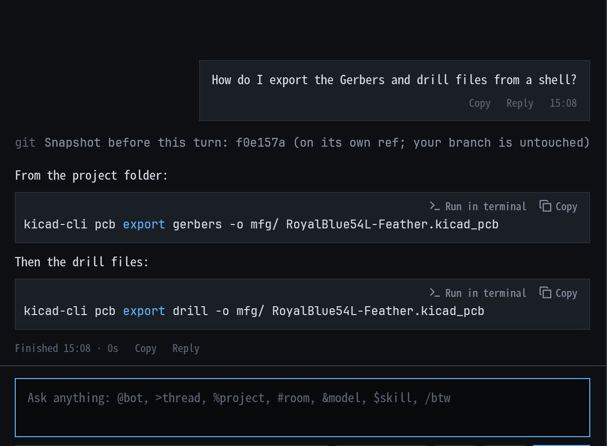
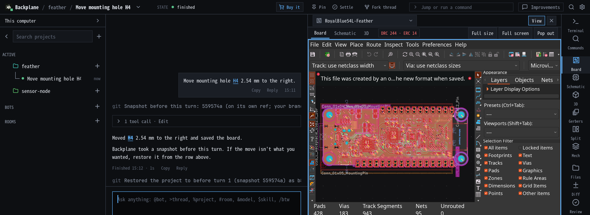

Backplane2/5
Now opens Altium projects
no Altium needed to view
a .SchDoc in Backplane's viewer

Backplane3/5
A snapshot before every turn
every project is a git repository
/restore

Backplane4/5
Copy it, or run it
a copy button wherever there's text
Run in terminal

Backplaneworks with KiCad
Backplane 0.16.3: KiCad in the pane, Mac too
Backplane KiCad bp.13.1
